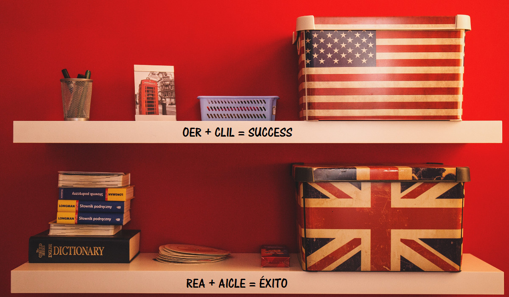

Recursos Educativos Abiertos
La aparición de la Red hace dos décadas ha revolucionado el mundo que nos rodea a todos los niveles. El uso más inmediato de la misma, en relación con AICLE tiene que ver con la posibilidad de acceder a todo tipo de recursos que de otro modo sería difícil disponer. La oferta va desde un amplio abanico de recursos específicos para el aprendizaje de la L2 concreta que pueden apoyar el aprendizaje de lengua y contenido, a materiales ya elaborados, de manera que pueden ser usados en el aula sin necesidad de transformación, y a otros materiales que podemos emplear para crear nuestros propios materiales para el aula AICLE.
Por otro lado, una de las ventajas que nos ofrecen los recursos de la Red en relación con AICLE es la variedad de formatos en que se presentan: textos, imágenes, presentaciones, animaciones, archivos audio y vídeo, lo que sin duda influye en las oportunidades que podemos dar a nuestros alumnos de aprender mejor. Esta variedad de formatos también nos permite planificar actividades que promuevan distintas habilidades y destrezas lingüísticas.
Cada uno de ellos tiene un potencial específico y distinto a la hora de trabajar la lengua o el contenido de manera independiente, pero cuando se trata de AICLE el valor es mayor, así una imagen, una animación o un vídeo cobran más relevancia si los contenidos se estudian en una segunda lengua porque aportan información sobre el contenido supliendo el déficit de comprensión lingüística. Igualmente, el uso de recursos variados en distintos momentos puede ayudar a un incremento de la motivación.

En este curso vamos a tratar, en primer lugar, los recursos que se pueden denominar como REA (Recursos Educativos Abiertos), procedente de la denominación en inglés OER (Open Educational Resources). Dicho término fue adoptado por la Unesco en 2002, y hace referencia a aquellos “materiales de enseñanza, aprendizaje e investigación en cualquier soporte, digital o de otro tipo, que sean de dominio público o que hayan sido publicados con una licencia abierta que permita el acceso gratuito a esos materiales, así como su uso, adaptación y redistribución por otros sin ninguna restricción o con restricciones limitadas"1 (Creative Commons- CC).
Las licencias abiertas se fundan en el marco existente de los derechos de propiedad intelectual y respetan la autoría de la obra, atribuyendo una serie de permisos y restricciones que el mismo autor decide. Los REA han experimentado un desarrollo progresivo en la última década, por lo que encontramos numerosos repositorios de REA de diversas materias y niveles, sobre todo a nivel de universidad donde los autores son más conscientes de la autoría y donde este movimiento comenzó a definirse con los cursos abiertos del MIT 2. No obstante los repositorios AICLE que conocemos como tal y muchos otros materiales de interés para el uso en el aula AICLE no especifican dicha licencia abierta aunque sí que se muestran con objeto de ser compartidos en la comunidad educativa y serán muy útiles.
Por último, hay que destacar que lo importante será saber cómo encontrar cada uno lo que necesita y los ejemplos en otras lenguas también nos pueden acercar a ese encuentro y servir de ejemplo.
[1]: Unesco, Declaración de París de 2012 sobre Recursos Educativos Abiertos http://www.unesco.org/new/fileadmin/MULTIMEDIA/HQ/CI/WPFD2009/Spanish_Declaration.html
[2]: MIT Massachusetts Institute of Technology, y su proyecto MIT OpenCourseWare que proporcionar acceso gratuito para la búsqueda de materiales MIT's para profesores, estudiantes y autodidactas de todo el mundo.

Recursos Educativos Digitales Abiertos y Metodología para la Enseñanza Bilingüe en Educación Infantil y Primaria por Javier Ramos Sancha y Área de Formación en Línea de INTEF bajo licencia Creative Commons Reconocimiento-NoComercial-CompartirIgual 4.0 Internacional License.